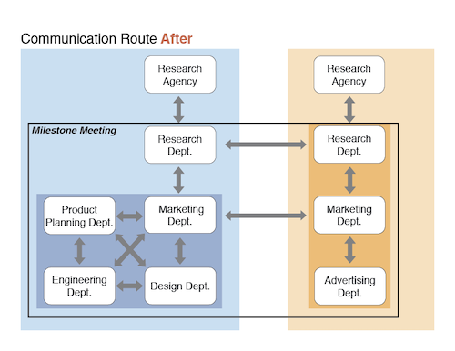
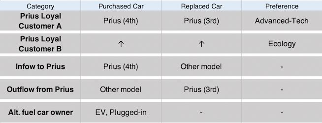
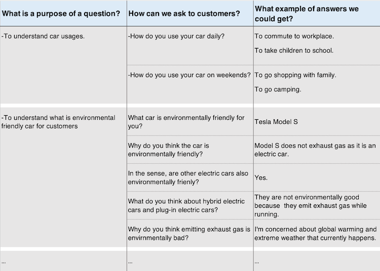
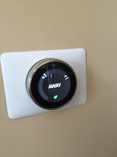

Overview
This project was a product evaluation research in 2016 when a new
Prius was launched. I was assigned the project just after moving to
the Market Research group in Toyota.
In addition to the product-centered research which was originally
requested by client departments, I conducted the market-centered
research to understand how the market changed from when Prius was
introduced for the first time, and grasp a gap between the current
market and Toyota about High-tech car and Environmental-friendly car.
The purpose of this research was to consider the result into next
model's concept.
Time
Jan.2016~Oct.2016 (10 months)
Role
A user research planner and analyst, leading a team of 16
Collaborator
The Engineering Dept.
The Design Dept.
The Marketing Dept.
The Product Planning Dept.
(Toyota Mortor Corporation, Toyota Motor Sales USA)
Background
In Toyota, a renewed model would be evaluated by user research
after it is introduced to the market in order to conider next
model change.
In 2016, I was in the Research Dept. of Japan HQ and assinged to
conduct user research to evaluate 4th generataion of Prius which
was debuted in the same year in U.S and Japan. It was a big
cross-functional project and I collaborated with the Engineering
Dept, the Design Dept., the Marketing Dept. andthe Product
planning Dept. both in U.S. and Japan.
The members biggest concern was why sales result of the new
generation was lower than that of previous one.

Challenge
-
To lead the team members from product-centered mind to
customer-centered mind
-
Organize an effective and efficient communication in a big team
Team management
At first, I organized communication routes from other departments
and set 3 main routes. I asked the Marketing in Japan HQ and US
office to discuss with other departments, summerize the requests
for the research, and inform me. Also, I discussed the research
scheme with the Research Dept. in US who negotiated with a
research agency.
This worked well because of 2 reasons. First, it was efficient
since I was not obsessed with answering all the requests from each
department. Second, this organization helped other departments
avoid misunderstanding or miscommunication.
Additionally, I set milestone meetings with all of the department to
decide the research scheme. That helped us avoid confusion,
misunderstanding, miscommunication and untrustness, which often
happened in other projects and resulted in schedule delays.


Analysis of current situation
Prius sales has decreased since ‘11 while alternative fuel car market
has expanded. It was critical for the company because not only Toyota
would lose their sales volume, but also the model led a brand image of
environmental friendly, advanced-tech. We needed to analyze the causes
to regain Toyota brand image and share in the market.

The hypothesis of other departments why the sales did not go well
was that a product feature such as design or function was not good.
However, after analyzing historical data of quantitative research
about people who bought the model, I came up with a differenct
perspective.
I found the fact that Prius image of Eco friendly and innovative
kept decreasing even though Fuel Economy and hybrid technology were
improved. I assumed that market condition or expectation had changed
and the model's core values might not have matched them.
I persuaded other departments to conduct the research to check not
only the product features but also the market condition with my
analysis.
Reasearch plan
Overall
I decided to inplement Focus Groups to get diverse & broad customers’
opinions about Alt. Fuel Car, Advanced Car and Prius core values.
Also, I planned to conduct Home visit interview to probe customer
opinions more clearly and more deeply through their lifestyle as
contexts.
Recruiting
I made 5 categories for Focus Groups, Prius loyal customers who prefer
advanced-tech, those who prefer ecology, people inflowed to or
outflowed from Prius and Alt. fuel car customers. They allowed us to
evaluate the latest model objectively with both positive and negative
opinions. For home visit interview, I decided to choose 1 person from
each group who is the most interesting.

Inteview flow
I created its interview flow with a framework before discussing with
the research agency. In the framwork, I considered "What is a purpose
of a question?", "How can we ask to customers?" and "What example of
answers we could get?" to make effective questionnaire.
In the interviw flow, it was difficult to ask participants to answer

Reasearch inplementation
Focus groups
My role was facilitating meetings before and after interviews
including a mederator and the research agency, and dealing with
requests from the team members in a back room during the interviews.
Particularly, meetings after the interviews worked well to summerize
what we took, keep improving a interview flow and move on
productively.
Home visit interview
We chose 1 person from Focus Groups who have unique or good opinions
of Eco Car, Advanced Car and Prius-ness. While visiting Home, we saw
items that represent his/her “Eco consciousness” and “Advanced Tech
Preferences”, and ask why he/she has it?. Review questions about Eco
Car, Advanced Car and Prius-ness to understand the opinion more
deeply.


Report
Customer insights & Next concept ideas
I summarized the result by showing what core values Prius had had in
the past from customer point of view, and how and why they were lost
in the current context, both in US and Japan. Also, by collaborating
with the product planning team, we proposed what concept ideas we
should explore for next model to regain its core values.
The report was presented to the Managing Director who was in charge of
the model and is now the Executive Vice President.
Quantitative & Qualitative Analysis
In addition to customer insight, from marketing point of view, I
analyzed why prius share decreased and reported it at an executive
meeting. With quantitative data, I showed historical trend and how
much it decreased. Also, I added qualitative data, comments from the
customer interview, to prove the credibility. I explained to whom
and what product features the company should focus on to increase
its market share.
The executives agreed with the result and the marketing dept. and
the product planning dept. took over to consider its marketing plan.